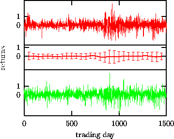

Constrained randomisation using combinatorial minimisation is a very flexible method since in principle arbitrary constraints can be realised. Although it is seldom possible to specify a formal null hypothesis for more general constraints, it can be quite useful to be able to incorporate into the surrogates any feature of the data that is understood already or that is uninteresting. Non-stationarity has been excluded so far by requiring the equations defining the null hypothesis to remain constant in time. This has a two-fold consequence. First, and most importantly, we must keep in mind that the test will have discrimination power against non-stationary signals as a valid alternative to the null hypothesis. Thus a rejection can be due to nonlinearity or non-stationarity equally well.
Second, if we do want to include non-stationarity in the null hypothesis we have to do so explicitly. Let us illustrate how this can be done with an example from finance. The time series consists of 1500 daily returns (until the end of 1996) of the BUND Future, a derived German financial instrument. The data were kindly provided by Thomas Schürmann, WGZ-Bank Düsseldorf. As can be seen in the upper panel of Fig. 13, the sequence is non-stationary in the sense that the local variance and to a lesser extent also the local mean undergo changes on a time scale that is long compared to the fluctuations of the series itself. This property is known in the statistical literature as heteroscedasticity and modelled by the so-called GARCH [40] and related models. Here, we want to avoid the construction of an explicit model from the data but rather ask the question if the data is compatible with the null hypothesis of a correlated linear stochastic process with time dependent local mean and variance. We can answer this question in a statistical sense by creating surrogate time series that show the same linear correlations and the same time dependence of the running mean and running variance as the data and comparing a nonlinear statistic between data and surrogates. The lower panel in Fig. 13 shows a surrogate time series generated using the annealing method. The cost function was set up to match the autocorrelation function up to five days and the moving mean and variance in sliding windows of 100 days duration. In Fig. 13 the running mean and variance are shown as points and error bars, respectively, in the middle trace. The deviation of these between data and surrogate has been minimised to such a degree that it can no longer be resolved. A comparison of the time-asymmetry statistic Eq.(3) for the data and 19 surrogates did not reveal any discrepancy, and the null hypothesis could not be rejected.
Figure: Non-stationary financial time series (BUND Future returns, top) and a surrogate (bottom) preserving the non-stationary structure quantified by running window estimates of the local mean and variance (middle).